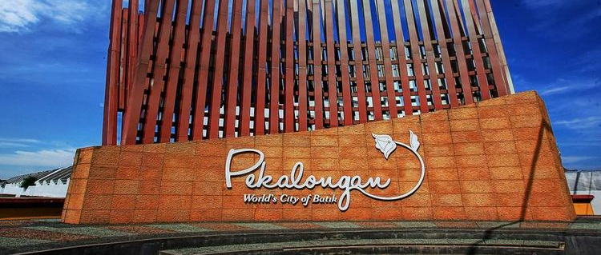
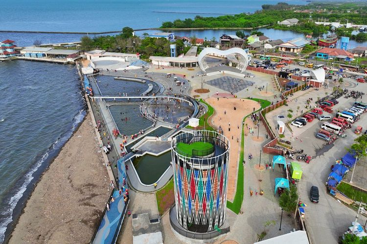
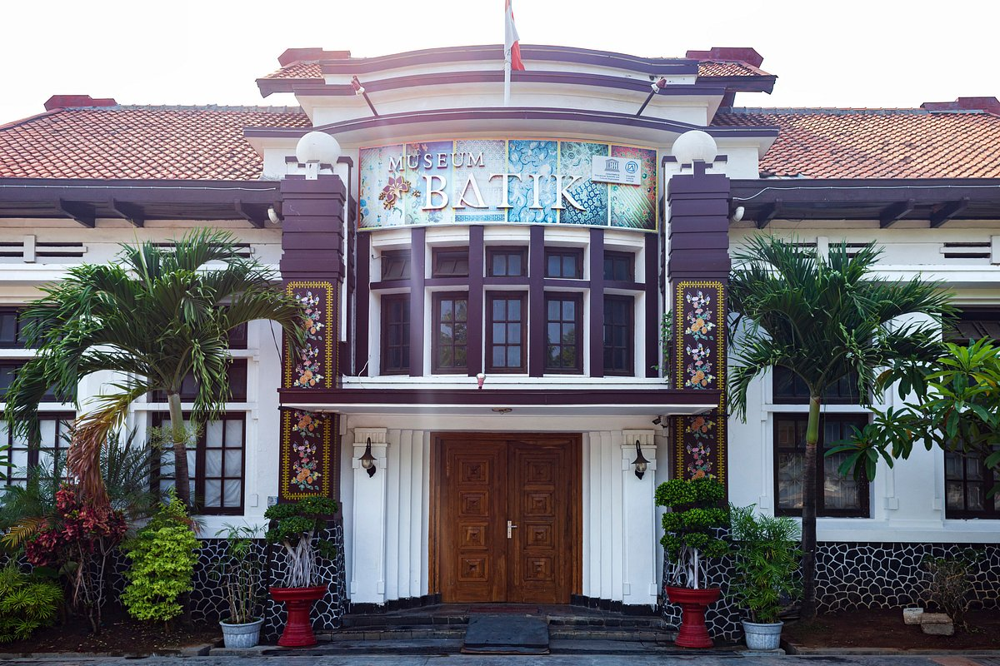
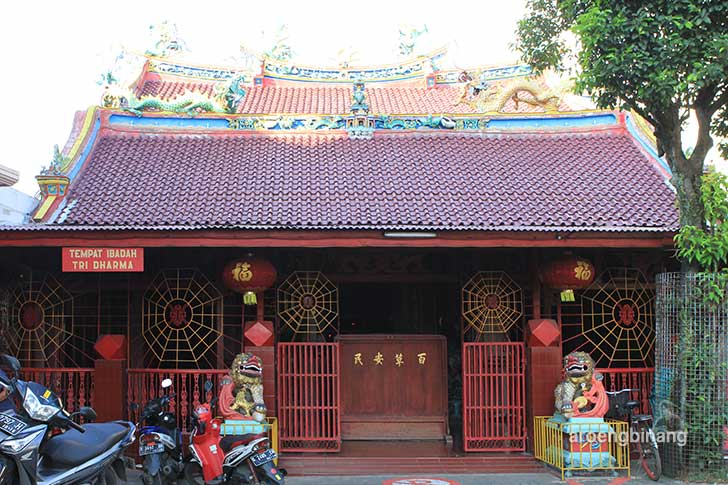

Sejarah

Pekalongan memiliki sejarah panjang sebagai pusat perdagangan dan budaya di pesisir utara Jawa. Pada abad ke-17, Pekalongan menjadi bagian dari kekuasaan VOC Belanda setelah kekalahan Mataram dalam serangan terhadap Batavia. Pada masa kolonial, Pekalongan berkembang menjadi pusat produksi batik yang terkenal hingga saat ini.
Setelah Indonesia merdeka pada tahun 1945, Pekalongan ditetapkan sebagai kota administratif pada tahun 1950 dan menjadi kota otonom pada tahun 1972. Kota ini terus berkembang sebagai pusat perdagangan, industri, dan budaya.
Geografis

Kota Pekalongan terletak di pesisir utara Pulau Jawa, di Provinsi Jawa Tengah. Kota ini memiliki luas sekitar 45,25 km² dan berada pada ketinggian rata-rata 1 meter di atas permukaan laut. Pekalongan terdiri dari dataran rendah dan dikelilingi oleh beberapa sungai kecil yang bermuara ke Laut Jawa.
Pekalongan terkenal dengan iklim tropisnya yang panas dan lembab sepanjang tahun, dengan curah hujan yang cukup tinggi terutama pada musim hujan. Kondisi geografis ini mendukung aktivitas pertanian dan perikanan yang menjadi salah satu sumber penghidupan utama bagi penduduk setempat.
Wisata
Pekalongan memiliki berbagai objek wisata yang menarik untuk dikunjungi. Selain sebagai pusat industri batik, kota ini juga menawarkan berbagai destinasi wisata budaya dan alam.
Museum Batik Pekalongan

Museum Batik Pekalongan merupakan destinasi utama yang menampilkan koleksi batik dari berbagai daerah dan zaman. Pengunjung dapat belajar tentang proses pembuatan batik serta melihat berbagai motif dan teknik yang digunakan oleh para pengrajin batik.
Wihara Po An Thian

Wihara Po An Thian adalah salah satu tempat ibadah tertua di Pekalongan, yang menawarkan arsitektur yang indah dan suasana yang damai. Wihara ini sering dikunjungi oleh wisatawan untuk melihat keunikan bangunan dan merasakan suasana spiritual yang khas.